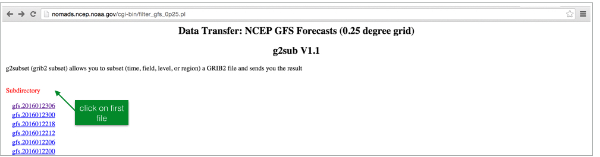
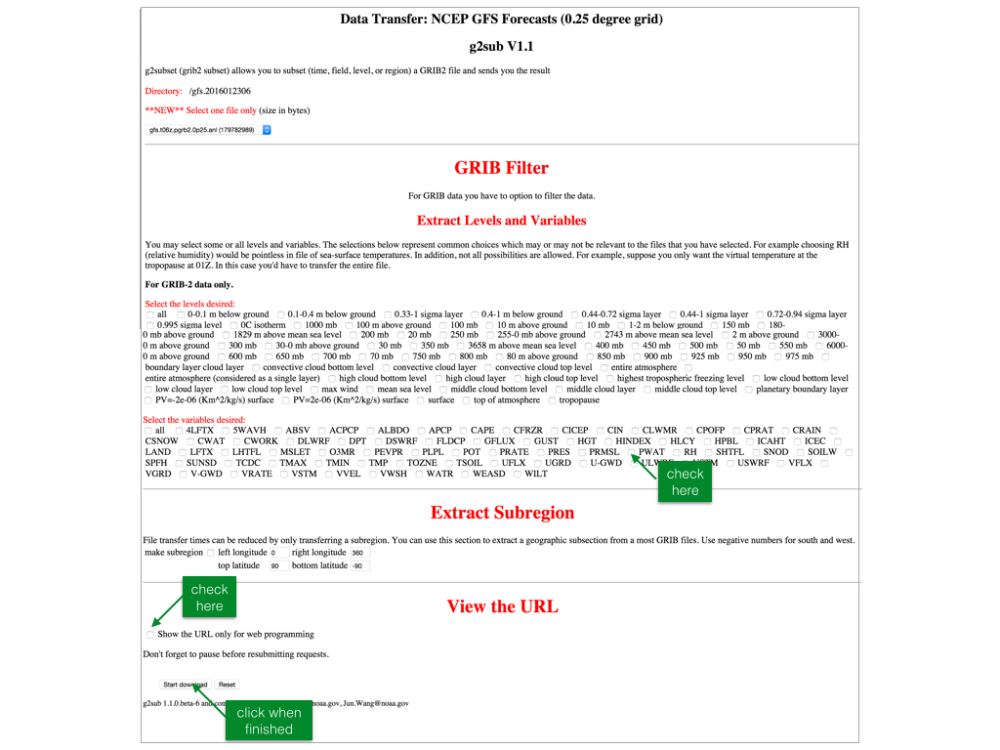
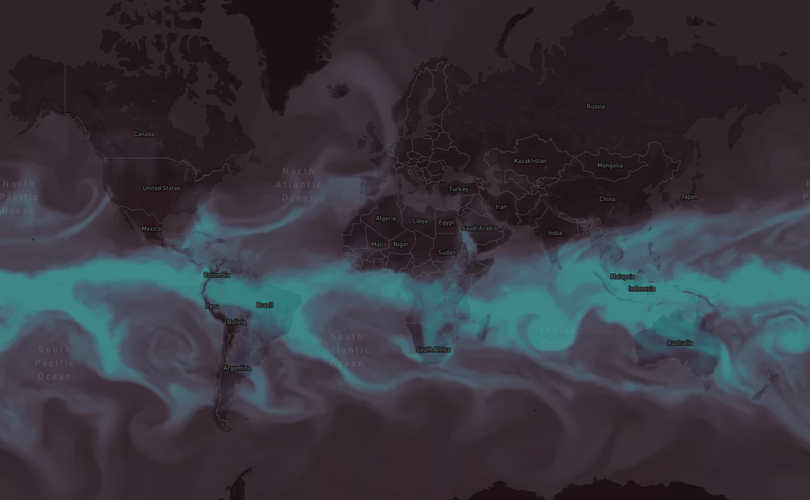

As part of the Commerce Data Usability Project, Zillow in collaboration with the Commerce Data Service has created a tutorial that merges American Community Service data with Zillow public data to provide a better look at housing affordability for protective service workers. If you have question, feel free to reach out to the Commerce Data Service at DataUsability@doc.gov.
Atmospheric Rivers (AR) are narrow regions in the atmosphere that transport water across the world.
When it comes to buying a house, there is a lot more to consider than just the sticker price. Wages and salaries vary widely across the country, including within specific occupations, as does the share of household income local residents are accustomed to dedicating to housing costs each month. At one extreme, some places with low housing costs might appear to be very affordable, but incomes might also be much lower than elsewhere; at the other extreme, some places that appear to be extremely expensive when looking at prices, might be more manageable as a result of relatively high wages and salaries.
How do we know when moisture is moving our way? Among the many meteorological indicators that are collected and modeled by the National Oceanic Atmospheric Administration (NOAA) is Precipitable Water (PWAT), which is the amount of water that can be extracted from the entire overlying atmosphere over a particular location on the surface of the Earth. PWAT is typically measured in inches, millimeters or kg/m2. It is a key measure of the available "fuel" for the storms in the atmosphere and an estimate for how much rain or snow could be produced from those storms. Thus, when PWAT values are high, the atmosphere is laden with moisture and has the potential to create storms with large amounts of precipitation whereas low values indicate the atmosphere is relatively dry and it is unlikely to produce significant amounts of rainfall or snowfall.

Beyond its utility, PWAT is a very striking weather variable. The complex swirling and eddying patterns bring alive atmospheric processes, and are a beautiful liquid analog to the more esoteric variable that they describe. Combining these data with reference information - coastlines, political borders, and terrain - helps to paint a clearer picture of earth surface and atmospheric interactions on our planet.
It's helpful to keep in mind that PWAT alone does not indicate to what extent certain atmospheric processes, such as thunderstorms, will be able to extract the water from the atmosphere, but it is a measure of the potential for such precipitation through those processes. Nonetheless, it's a critical measure collected by satellite instruments and used for producing NOAA's weather forecasts.
Getting Started
This tutorial is the first in a two-part series that will guide you through the steps to visualize NOAA NOMADS data. Part 1 covers processing and visualization of PWAT data from the 0.25 degree Global Forecast System (GFS). As atmospheric rivers are dynamic, Part 2 will discuss how to produce a video-based animated map of this data that enables discovery of complex temporal patterns.
To get started quickly, the code for this tutorial can be found at the following Github Repository.
Step 1: Preliminaries
Libraries and Utilities
We'll be using the following tools to wrangle the weather model output files:
- GDAL: Translator library for raster and vector geospatial data formats;
- rasterio: Clean and fast and geospatial raster I/O for Python programmers who use Numpy;
- gribdoctor: Utilities for handling quirks of General Regularly-distributed Information in Binary form (grib) files in GIS applications. Grib data is a concise data format commonly used in meteorology to store historical and forecast weather data which can looked at using software applications.
- Mapbox Studio: A map design platform for vector-based web maps.
You should be able to find install instructions for all of these on their respective web pages.
Step 2: Get the data
The NOAA NOMADS website provides access to a myriad array of weather prediction data. We'll be working with precipitable water (PWAT) data from the 0.25 degree Global Forecast System (GFS). There is a lot of data in the system, so we'll guide you through how to find the URL that will enable you to download the right data.
As can be seen in this file list on the NOMADS site, there are multiple prediction times for each dataset corresponding to when the model has run, each of which allows access to a number of variables for a large number of atmospheric levels at various intervals from when the model has run. To start, let's select the first file in the list.

For each file, a wizard page allows users to select the appropriate conditions. We'll need to check off 'PWAT' in the section labeled 'Select the variables desired', the subregion as well as the handy checkbox at the bottom that creates a URL for "web programming" - we'll be using a URL constructed from this.

For precipitable water (PWAT) at all levels, we have the following URL - note that the URL will change with the date, so make sure to construct your own:
http://nomads.ncep.noaa.gov/cgi-bin/filter_gfs_0p25.pl?file=gfs.t12z.pgrb2.0p25.f000&all_lev=on&var_PWAT=on&leftlon=0&rightlon=360&toplat=90&bottomlat=-90&dir=%2Fgfs.2016011212Let's download this file to our working directory as "raw.grib2" using wget. Alternatively, you can directly download from the NOMADS web interface.
wget http://nomads.ncep.noaa.gov/cgi-bin/filter_gfs_0p25.pl?file=gfs.t12z.pgrb2.0p25.f000&all_lev=on&var_PWAT=on&leftlon=0&rightlon=360&toplat=90&bottomlat=-90&dir=%2Fgfs.2016011212 -O raw.grib2You should now have a one band grib2 depicting PWAT for the date and time that you selected. Open this in a desktop GIS system such as QGIS and you should see the following:

Step 3: Geoprocessing
Converting to global grib using gribdoctor
A quirk of these grib files are their extent: a global, equirectangular raster with an origin of -(cellsize / 2), all the way around the world, crossing the antimeridian, to 360 - (cellsize / 2). To more easily process the gribs, we created gribdoctor - a project that is still under development - which (a) upsamples the data by a factor of 2, (b) splits at the antimeridian, and (c) splices the data onto the other side to make a -180 to 180 extent dataset. This is crucial to be able to work with the Mapbox stack. Here is the command:
gribdoctor smoosh -dev -uw <input>.grib2 <output>.tifgribdoctor smooshis the command + subcommand used to perform this operation;-dev -uware input options forgribdoctorindicating we want to utilize-devfunctionality to automatically detect if it is the right spatial reference, and-uwto "unwrap" the raster to an -180/180 extent;
For our data:
gribdoctor smoosh -dev -uw raw.grib2 unwrap.tifAfter running gribdoctor, you should see a files that looks like the following (open in a GIS or other GeoTIFF viewer):

Notice how the extent in the x-dimension is now -180 to 180, which will work in Mapbox web maps.
Warp to Web Mercator
Mapbox Studio utilizes the web mercator projection. In order to integrate the PWAT imagery with street and terrain data, we will need to warp our input data into this projection. Here is the command in parallel:
gdalwarp -t_srs EPSG:3857 -r BILINEAR <input>.tif <output>.tifgdalwarpis the command used;-t_srs EPSG:3857is the EPSG code for web mercator;-r BILINEARspecifies to use bilinear resampling in this operation. Because these data are of a continuous nature, we want to use this method. The default, nearest neighbor, will leave artifacts in the output data.
Running on our data:
gdalwarp -t_srs EPSG:3857 -r BILINEAR unwrap.tif mercator.tifWe should see the input data projected to the web mercator projection:

Colorize PWAT
Right now, our tif contains cell values that correspond to units of precipitable water units (kg/m2). In order to utilize this on a web map, we need to convert these values into color values (RGB). We'll do this using a tool designed for creating hypsometric tints, gdaldem color-relief. This tool takes a color ramp file that maps input data values to red, green, and blue color values. Here's the ramp that we used:
10.0 47 31 45
18.0 63 48 68
26.0 76 68 94
34.0 85 90 120
42.0 90 113 146
50.0 91 137 171
58.0 87 163 194
66.0 79 189 214
74.0 70 216 231
82.0 64 244 244The first column is the data (PWAT) value, and the second, third, and fourth are the red, green, and blue values that this should be mapped to. Anything in-between is interpolated. You can generate your own color ramp - We recommend http://tristen.ca/hcl-picker/#/hlc/6/1/21313E/EFEE69 (you'll have to convert from color hex code) or http://colorbrewer2.org/.
Save this ramp to a text file color-ramp.txt. Here is the command:
gdaldem color-relief <input>.tif <color ramp>.txt <output>.tifRunning on our data:
gdaldem color-relief mercator.tif color-ramp.txt color.tifNow, you should have a color tif of your input data:
Step 4: Upload and incorporate into a Map
We'll be using Mapbox Studio to upload and integrate our colorized PWAT data with basemap data. If at any point you become lost, refer back to the "Getting Started with Mapbox Studio" Guide. You'll need to make an account to use Studio.
Upload the colorized PWAT tif
We need to upload our colorized PWAT data to a Mapbox Studio dataset in order to integrate it into a style. In the data tab, click the "New dataset" button to upload - detailed instructions here: https://www.mapbox.com/help/getting-started-mapbox-studio-1/#upload-a-dataset

Integrate into a map style
After the upload is finished processing we can add this dataset to a style. For the color scheme I chose above, the "dark" template is a good starting point. In the Styles tab, click "New style", and select the Dark template:

Detailed instructions here: https://www.mapbox.com/help/getting-started-mapbox-studio-1/#create-a-new-style
Now, let's add our dataset to this new style. Click on Add new layer, --> Select a dataset, then navigate to and click on your uploaded data.

Clicking "Create" layer will then add this dataset as the top layer in your style. It should be added as the uppermost layer.
Stylize the map
This is the fun part! Let's first move this layer below labels, borders, but above water, terrain and landcover. Click and drag to the desired position. You'll now see labels, borders, and other features as you zoom into the map.
Now, let's make this layer slightly transparent and allow the water areas to slightly show through. Click on the layer, then change the opacity to ~ 0.5. You can also slightly bump the brightness to help the layer pop.

If you are satisfied with your style, you are done! Click publish, and your map is ready to be shared. Alternatively, keep tweaking the style - every element in the map from labels, to landcover, to the terrain style can be manipulated.
Sharing your map
From the Home tab of Mapbox Studio, click on your published map.

To share, copy the share link in the bottom left of the page. Here's a live map: https://api.mapbox.com/styles/v1/dnomadb/cijqefqgn005h90lxxe5dygmn.html?title=true&access_token=pk.eyJ1IjoiZG5vbWFkYiIsImEiOiJEak5aTXdZIn0.UtQIRl-MzHHZk6TIAHSWww#1.22/21.6/23.5
In part one of this tutorial, we've taken a raw grib2 file from the NOAA NOMADS site, and transformed the data into a striking map showing atmospheric rivers across the world. The basics in opening, manipulating, and using the data can be applied broadly across potential applications. Stay tuned for Part 2 of the tutorial where we'll manipulate this data into an animated, interactive map. For a preview, check out: https://www.mapbox.com/blog/animated-atmospheric-water/